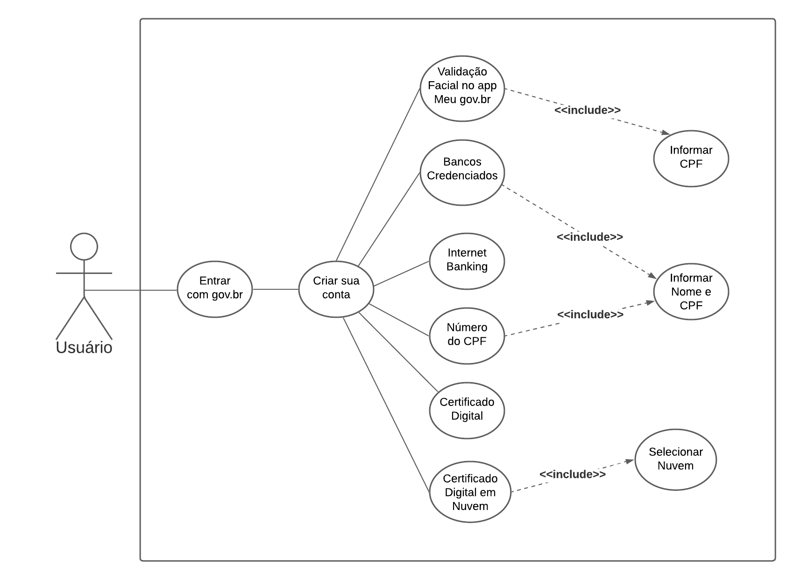
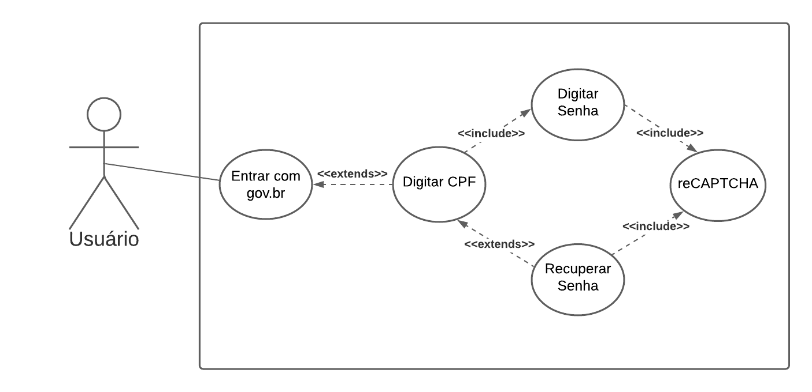
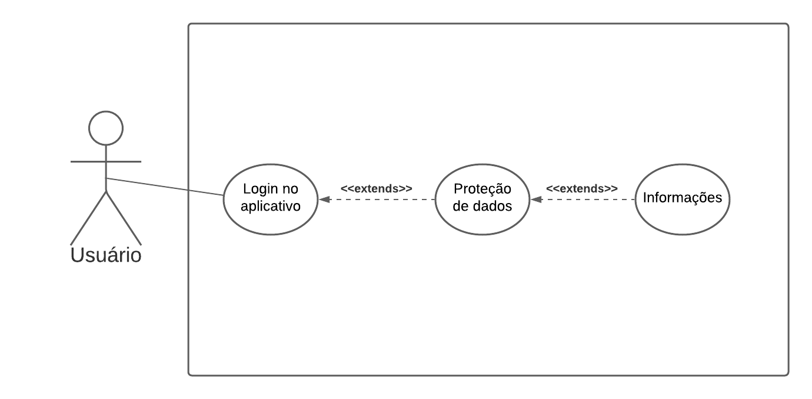
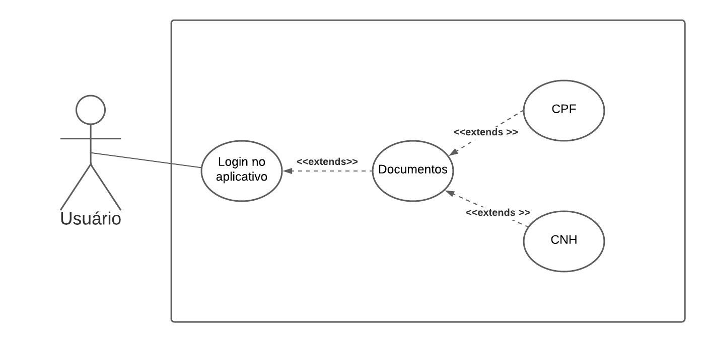
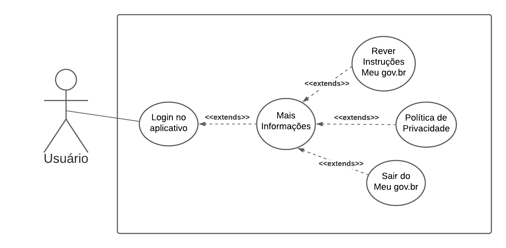
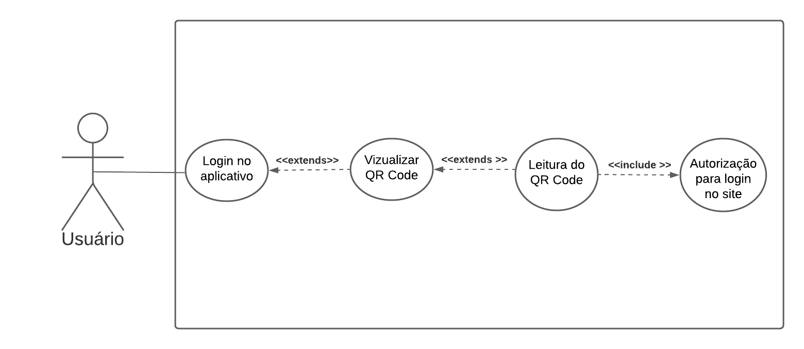
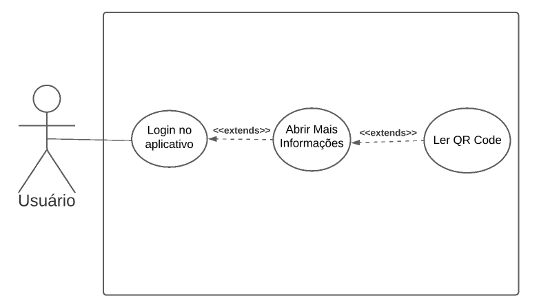

Casos de Uso
Histórico de Versões
| Data | Versão | Descrição | Autores | Revisor |
|---|---|---|---|---|
| 19/03/2021 | 0.1 | Criação da Página | Luís e Gabriela | Gabriela Pivetta |
| 19/03/2021 | 0.2 | Adição dos diagramas de Cadastro e Login | Gabriela Pivetta | Luis Marques |
| 19/03/2021 | 0.3 | Adição dos demais diagramas | Gabriela Pivetta | Luis Marques |
| 19/03/2021 | 0.4 | Adição das legendas das imagens | Gabriela Pivetta | Luis Marques |
| 19/03/2021 | 0.5 | Adição de tabelas de casos de uso | Luis Marques | Gabriela Pivetta |
| 21/03/2021 | 0.6 | Adição de tabela login, correções ortográfica e adição de Referencias | Luis Marques | Gabriela Pivetta |
| 21/03/2021 | 0.7 | Adição Introdução | Luis Marques | Gabriela Pivetta |
| 21/03/2021 | 0.8 | Correções nos textos, informações e diagramas | Gabriela Pivetta | Luis Marques |
Introdução
Os Casos de uso são descrições de um conjunto de ações que um sistema ou mais deve desempenhar em colaboração com um ou mais usuários externos ao sistema.
Os casos de uso são esses conjuntos de ações, os usuários são os atores é o conjunto de sistemas são os sujeitos.
Casos de Uso
UC1 - Realizar Cadastro

Figura1: Caso de Uso - Cadastro. Autor: Gabriela Pivetta.
| UC01 | Informações |
|---|---|
| Descrição | O ator deve ser capaz de realizar o cadastro no sistema gov.br |
| Atores | Usuário |
| Pré-Condição | O ator deve possuir CPF |
| Fluxo Principal | 1: O ator entra no aplicativo Meu-gov.br 2: O ator clica em "Entrar com gov.br" 3: O ator clica em "Crie sua conta" 4: O sistema abre uma janela popup com as opções para cadastro 5: O ator seleciona número do CPF 6: O ator então digita o número de CPF, nome completo, o reCAPTCHA , lê os termos de uso e seleciona a opção que leu os termos de uso 7: O ator completa os dados de cadastro 8: O ator faz a confirmação de e-mail 9: O ator responde às perguntas pessoais para realizar a validação de sua identidade 10: O ator escolhe se prefere receber a habilitação do cadastro por e-mail, sms ou enviar para o telefone cadastrado 11: O sistema envia um link para habilitação do cadastro para o meio selecionado anteriormente 12: O ator usa este link para criação de sua senha 13: O sistema então direciona o usuário para tela de login |
| Fluxo Alternativo 1: | 1: O ator entra no aplicativo Meu-gov.br 2: O ator clica em "Entrar com gov.br" 3: O ator clica em "Crie sua conta" 4: O sistema abre uma janela popup com as opções para cadastro 5: O ator seleciona validação facial no App Meu-gov.br 6: O ator então digita o número de CPF, nome completo, o reCAPTCHA , lê os termos de uso e seleciona a opção que leu os termos de uso 7: O ator completa os dados de cadastro 8: O ator faz a confirmação facial pelo App Meu-gov.br, realizando a leitura do qr code 12: O ator então faz a criação de sua senha 13: O sistema então direciona o usuário para tela de login |
| Fluxo Alternativo 2: | 1: O ator entra no aplicativo Meu-gov.br 2: O ator clica em "Entrar com gov.br" 3: O ator clica em "Crie sua conta" 4: O sistema abre uma janela popup com as opções para cadastro 5: O ator seleciona criar conta com o autoatendimento de bancos credenciados 6: O ator seleciona o banco para realizar a validação 7: O ator completa os dados de cadastro 8: O ator faz a confirmação pelo app do seu banco 9: O ator então faz a criação de sua senha 10: O sistema então direciona o usuário para tela de login |
| Fluxo Alternativo 3: | 1: O ator entra no aplicativo Meu-gov.br 2: O ator clica em "Entrar com gov.br" 3: O ator clica em "Crie sua conta" 4: O sistema abre uma janela popup com as opções para cadastro 5: O ator seleciona Internet Banking 6: O ator seleciona o banco para realizar a validação 7: O ator completa os dados de cadastro 8: O ator faz a confirmação pelo internet banking do banco selecionado 9: O ator então faz a criação de sua senha 10: O sistema então direciona o usuário para tela de login |
| Fluxo Alternativo 4: | 1: O ator entra no aplicativo Meu-gov.br 2: O ator clica em "Entrar com gov.br" 3: O ator clica em "Crie sua conta" 4: O sistema abre uma janela popup com as opções para cadastro 5: O ator seleciona Internet Banking 6: O ator seleciona o Certificado digital 7: O ator completa os dados de cadastro 8: O ator faz a confirmação pelo seu certificado digital 9: O ator então faz a criação de sua senha 10: O sistema então direciona o usuário para tela de login |
| Fluxo Alternativo 5: | 1: O ator entra no aplicativo Meu-gov.br 2: O ator clica em "Entrar com gov.br" 3: O ator clica em "Crie sua conta" 4: O sistema abre uma janela popup com as opções para cadastro 5: O ator seleciona Internet Banking 6: O ator seleciona o Certificado digital em nuvem 7: O ator completa os dados de cadastro 8: O ator faz a confirmação 9: O ator então faz a criação de sua senha 10: O sistema então direciona o usuário para tela de login |
| Fluxo de Exceções 1: | 1: O ator entra no aplicativo Meu-gov.br 2: O ator clica em "Entrar com gov.br" 3: O ator clica em "Crie sua conta" 4: O sistema abre uma janela popup com as opções para cadastro 5: O ator seleciona cancelar |
| Pós Condição | O usuário se registra no sistema gov.br |
UC2 - Realizar Login

Figura2: Caso de Uso - Login. Autor: Gabriela Pivetta.
| UC02.1 | Informações |
|---|---|
| Descrição | O ator quer logar no aplicativo |
| Atores | Usuário |
| Pré-condição | Ter uma conta no aplicativo |
| Fluxo Principal | 1: O ator entra no aplicativo Meu-gov.br 2: O ator clica em "Entrar com gov.br" 3: O ator digita seu CPF no campo CPF 4: O ator clica no botão "Avançar" 5: O ator digita sua senha 6: O ator clica em "Entrar" |
| Fluxo alternativo 1: | 1: O ator entra no aplicativo Meu-gov.br 2: O ator clica em "Entrar com gov.br" 3: O ator digita seu CPF no campo CPF 4: O ator clica no botão "Avançar" 5: O ator digita sua senha 6: O ator clica em "Entrar" 7: O sistema solicita que seja realizada a Validação Facial do usuário 8: O usuário realiza a validação facial 9: O sistema libera o acesso ao aplicativo |
| Fluxo de Exceções 1: | 1: O ator entra no aplicativo Meu-gov.br 2: O ator clica em "Entrar com gov.br" 3: O ator digita seu CPF no campo CPF 4: O ator clica no botão "Avançar" 5: O ator não digita sua senha 6: O ator clica em "Entrar" 7: O sistema informa que a senha não foi informada |
| Pós Condição | O usuário tem acesso ao Aplicativo |
| UC02.2 | Informações |
|---|---|
| Descrição | O ator deseja alterar a senha ao utilizar o aplicativo. |
| Atores | Usuário |
| Pré-condição | O usuário deve possuir uma Conta no sistema gov.br e possuir título de eleitor e/ou CNH para utilizar a validação facial |
| Fluxo Principal | 1: O ator entra no aplicativo Meu-gov.br 2: O ator clica em "Entrar com gov.br" 3: O ator digita seu CPF no campo CPF 4: O ator clica no botão "Avançar" 5: O ator clica em "Esqueci minha senha" 6: O ator realiza o reCAPTCHA 7: O ator seleciona o Email de cadastro para recebimento de um código de acesso 8: O ator abre o seu e-mail e copia o código de verificação 9: O ator digita o código no campo que apareceu no aplicativo 10: O ator Redefine a sua senha |
| Fluxo alternativo 1: | 1: O ator entra no aplicativo Meu-gov.br 2: O ator clica em "Entrar com gov.br" 3: O ator digita seu CPF no campo CPF 4: O ator clica no botão "Avançar" 5: O ator clica em "Esqueci minha senha" 6: O ator realiza o reCAPTCHA 7: O ator seleciona Validação Facial 8: O resolve o reCAPTCHA para validação 9: O sistema abre o aplicativo meu gov.br com as instruções para realização da validação facial 10: O ator le as instruções e clica em próximos 11: O ator clica no botão "Começar" 12: O ator realiza o reconhecimento facial 13: O sistema verifica se o reconhece |
| Fluxo alternativo 2: | 1: O ator entra no aplicativo Meu-gov.br 2: O ator clica em "Entrar com gov.br" 3: O ator digita seu CPF no campo CPF 4: O ator clica no botão "Avançar" 5: O ator clica em "Esqueci minha senha" 6: O ator realiza o reCAPTCHA 7: O ator seleciona o Celular de cadastro para recebimento de um código de acesso 8: O ator abre o SMS e copia o código de verificação 9: O ator digita o código no campo que apareceu no aplicativo 10: O ator Redefine a sua senha |
| Fluxo de Exceções 1: | 1: O ator entra no aplicativo Meu-gov.br 2: O ator clica em "Entrar com gov.br" 3: O ator digita seu CPF no campo CPF 4: O ator clica no botão "Avançar" 5: O ator clica em "Esqueci minha senha" 6: O ator erra o reCAPTCHA 7: O sistema apresenta uma mensagem de erro no reCAPTCHA |
| Fluxo de Exceções 2: | 1: O ator entra no aplicativo Meu-gov.br 2: O ator clica em "Entrar com gov.br" 3: O ator digita seu CPF no campo CPF 4: O ator clica no botão "Avançar" 5: O ator clica em "Esqueci minha senha" 6: O ator realiza o reCAPTCHA 7: O ator seleciona o Celular de cadastro para recebimento de um código de acesso 8: O ator não digita, digita erroneamente, ou não recebe um código de verificação 9: O sistema apresenta uma mensagem de código de verificação incorreta |
| Pós Condição | A senha do usuário e alterada |
UC3 - Proteção de Dados

Figura3: Caso de Uso - Proteção de Dados. Autor: Gabriela Pivetta.
| UC03 | Informações |
|---|---|
| Descrição | O ator deve acessar as Informações referente a Proteção de Dados |
| Atores | Usuário |
| Pré-condição | Possuir título de eleitor e/ou CNH com foto digital para utilizar a validação facial |
| Fluxo Principal | 1: O ator entra no aplicativo Meu-gov.br 2: O ator clica em "Entrar com gov.br" 3: O ator digita seu CPF no campo CPF 4: O ator clica no botão "Avançar" 5: O ator digita sua senha e clica em "Entrar" 6: O ator clica em "Proteção de Dados" 7: O ator seleciona Dados Biométricos 8: O ator acessa as informações |
| Fluxo alternativo 1: | 1: O ator entra no aplicativo Meu-gov.br 2: O ator clica em "Entrar com gov.br" 3: O ator digita seu CPF no campo CPF 4: O ator clica no botão "Avançar" 5: O ator digita sua senha e clica em "Entrar" 6: O ator clica no menu inferior em "Proteção de Dados" 7: O ator seleciona dados biométricos 8: O ator acessa as informações |
| Fluxo de Exceções 1: | 1: O ator entra no aplicativo Meu-gov.br 2: O ator clica em "Entrar com gov.br" 3: O ator digita seu CPF no campo CPF 4: O ator clica no botão "Avançar" 5: O ator digita sua senha e clica em "Entrar" 6: O ator clica em "Proteção de Dados" 7: Não existe opção de escolha, pois o usuário não possui CNH ou título de eleitor com foto |
| Pós Condição | O usuário acessa as informações sobre a Proteção de Dados |
UC4 - Documentos

Figura4: Caso de Uso - Documentos. Autor: Gabriela Pivetta.
| UC04 | Informações |
|---|---|
| Descrição | O ator deve acessar os seus Documentos Oficias em formato digital |
| Atores | Usuário |
| Pré-condição | Possuir título de eleitor e/ou CNH com foto digital |
| Fluxo Principal | 1: O ator entra no aplicativo Meu-gov.br 2: O ator clica em "Entrar com gov.br" 3: O ator digita seu CPF no campo CPF 4: O ator clica no botão "Avançar" 5: O ator digita sua senha e clica em "Entrar" 6: O ator clica em Documentos 7: O ator seleciona qual documento ele quer ter acesso 8: O ator acessa o documento |
| Fluxo alternativo 1: | 1: O ator entra no aplicativo Meu-gov.br 2: O ator clica em "Entrar com gov.br" 3: O ator digita seu CPF no campo CPF 4: O ator clica no botão "Avançar" 5: O ator digita sua senha e clica em "Entrar" 6: O ator clica no menu inferior em carteira 7: O ator seleciona qual documento ele quer ter acesso 8: O ator acessa o documento |
| Fluxo de Exceções 1: | 1: O ator entra no aplicativo Meu-gov.br 2: O ator clica em "Entrar com gov.br" 3: O ator digita seu CPF no campo CPF 4: O ator clica no botão "Avançar" 5: O ator não digita a sua senha e clica em "Entrar" 6: O sistema apresenta uma mensagem de erro, informando que a senha deve ser informada |
| Fluxo de Exceções 2: | 1: O ator entra no aplicativo Meu-gov.br 2: O ator clica em "Entrar com gov.br" 3: O ator digita seu CPF no campo CPF 4: O ator clica no botão "Avançar" 5: O ator digita a sua senha e clica em "Entrar" 6: O ator não completa o reCAPTCHA 7: O sistema apresenta uma mensagem de erro, informando que o reCAPTCHA deve ser completo |
| Pós Condição | O usuário acessa o seu documento oficial em formato digital |
UC5 - Logout

Figura5: Caso de Uso - Logout. Autor: Gabriela Pivetta.
| UC05 | Informações |
|---|---|
| Descrição | O ator deve ser capaz de sair do aplicativo |
| Atores | Usuário |
| Pré-condição | Estar logado no aplicativo |
| Fluxo Principal | 1: O ator entra no aplicativo Meu-gov.br 2: O ator clica em "Entrar com gov.br" 3: O ator digita seu CPF no campo CPF 4: O ator clica no botão "Avançar" 5: O ator digita sua senha e clica em "Entrar" 6: O ator clica em "Mais opções" no menu inferior 7: O ator seleciona Sair do meu gov.br |
| Pós Condição | O usuário efetua sua saída do aplicativo |
UC6 - QR Code (Site)

Figura6: Caso de Uso - QR Code (Site). Autor: Gabriela Pivetta.
| UC06 | Informações |
|---|---|
| Descrição | O ator deve ser capaz de ler o QR code no site do Meu gov.br para realizar o login |
| Atores | Usuário |
| Pré-condição | Estar logado no aplicativo |
| Fluxo Principal | 1: O ator entra no aplicativo Meu-gov.br 2: O ator clica em "Entrar com gov.br" 3: O ator digita seu CPF no campo CPF 4: O ator clica no botão "Avançar" 5: O ator digita sua senha e clica em "Entrar" 6: O ator clica em "QR code" 7: O ator faz a leitura do QR code pelo celular 8: O sistema autoriza o login do usuário |
| Fluxo de Exceções 1: | 1: O ator entra no aplicativo Meu-gov.br 2: O ator clica em "Entrar com gov.br" 3: O ator digita seu CPF no campo CPF 4: O ator clica no botão "Avançar" 5: O ator digita sua senha e clica em "Entrar" 6: O ator clica em "QR code" 7: O ator faz a leitura do QR code pelo celular 8: O sistema não reconhece o QR code apresentado, apresentando uma mensagem de erro |
| Pós Condição | O usuário efetua seu login pelo computador no site gov.br |
UC7 - QR Code (Login)

Figura7: Caso de Uso - QR Code (Login). Autor: Gabriela Pivetta.
| UC07 | Informações |
|---|---|
| Descrição | O ator deve ser capaz acessar o QR code com o seu CPF |
| Atores | Usuário |
| Pré-condição | Estar logado no aplicativo |
| Fluxo Principal | 1: O ator entra no aplicativo Meu-gov.br 2: O ator clica em "Entrar com gov.br" 3: O ator digita seu CPF no campo CPF 4: O ator clica no botão "Avançar" 5: O ator digita sua senha e clica em "Entrar" 6: O ator clica em "Mostrar mais informações" |
| Pós Condição | O usuário tem acesso ao QR code do seu CPF para apresentação |
Referências Bibliográficas
SERRANO, Milene, SERRANO, Maurício. Requisitos - Aula 13. 40 slides. p 28, 29. Disponível em: https://aprender3.unb.br/pluginfile.php/693320/mod_resource/content/1/Requisitos%20-%20Aula%20013a.pdf. Acesso em: 18 de março de 2021.
PRESSMAN, Roger S.; MAXIM, Bruce R.. Engenharia de software: uma abordagem profissional. 8 ed. Porto Alegre: AMGH, 2016. p 210, 211.